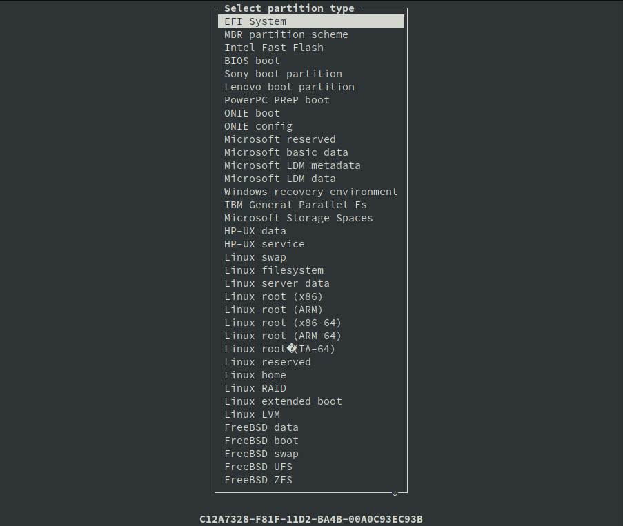
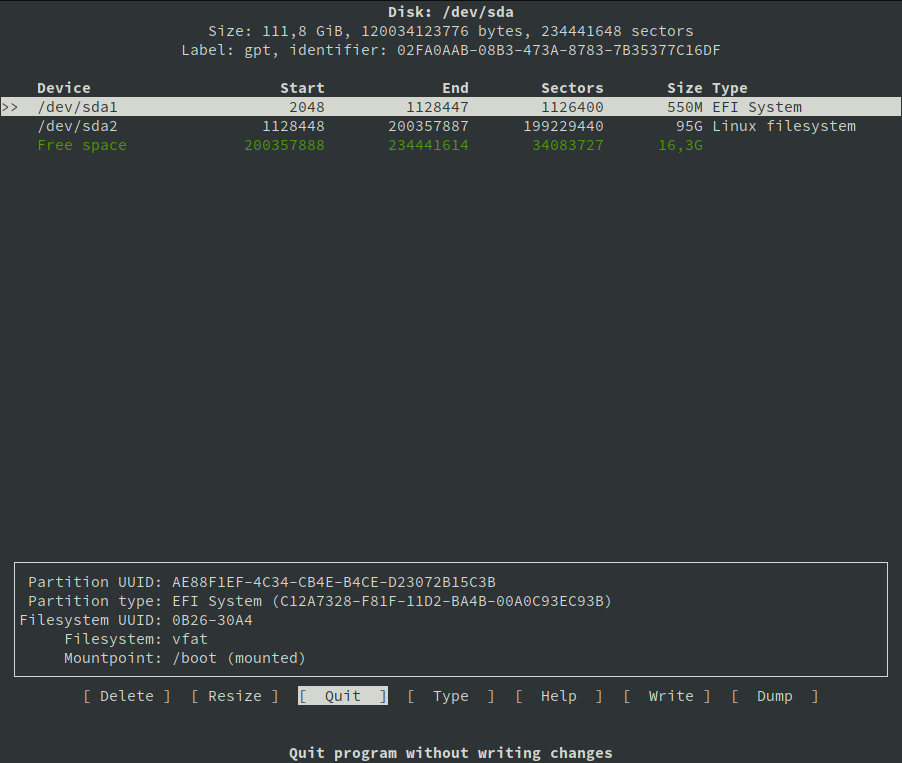
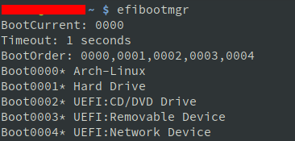

Published on 26/12/18 by Tomás Abril
Recent versions of the Arch Linux kernel are built with the option to be booted directly by a UEFI motherboard, this is called EFISTUB. Using a bootloades like rEFInd or grub is still recommended if you are using multible operating systems.
Not all EFI firmware supports EFISTUB, but this should work on most computers made in the last few years.
An Efi system partition should be between 100mb and 500mb.
I use cfdisk which is a command line graphic program to partition the disk, The EFI partition has to be set to type EFI System.
This are the partitions I ended up on my system.
/dev/sda1 is my efi partition and /dev/sda2 will be my root partition.
After the partitions are created you must format the esp as FAT32, you can do that with the command
# mkfs.fat -F32 /dev/sda1
Mount the esp partition to your /boot
Complete normal instalation but instead of installing a boot loader use the steps bellow.
Blog on Managing EFI Boot Loaders for Linux: Using the Kernel's EFI Stub Loader by Rod Smith
Page on efibootmgr, this is a Linux program to modify the EFI Boot Manager. We will use this to create and destroy boot entries and change boot order.
# efibootmgr
This gives me the following result. "Boot0000* Arch-Linux" is my current Arch Linux boot.
# efibootmgr -b 0 -B
-b -B options are to modify and delete. 0 is the number of the entry, this is always an hexadecimal. In my case this command would delete my Arch-Linux boot entry.
# efibootmgr --disk /dev/sda --part 1 --create --label "Arch-Linux" --loader /vmlinuz-linux --unicode 'root=/dev/sda2 rw initrd=\intel-ucode.img initrd=\initramfs-linux.img' --verbose
This command has to be exactly right to your system or your OS will not boot.
| --disk /dev/sda | The disk where the loader is located (not partition). Change according to your system |
| --part 1 | EFI partition where loader will be created. Change according to your system |
| --create | Create new boot entry and add to boot list |
| --label "Arch-Linux" | Boot manager display label |
| --loader /vmlinuz-linux | Name of the EFI loader |
| --unicode ' ' | Inside the quotes is a list of kernel parameters, root and initrd are obligatory |
| root=/dev/sda2 | Location of your root folder. Change according to your system |
| rw | Mount as read/write |
| initrd=\intel-ucode.img | This option is to enable microcode on your system. This is optional and depends on the cpu. Change according to your system |
| initrd=\initramfs‑linux.img | Location of initial ram disk, note the backslash (\). If you mounted the efi partition to /boot this option can be used as shown |
| --verbose | Show additional information during and after execution |